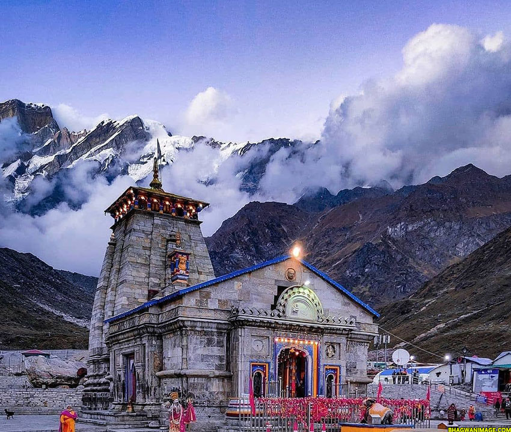
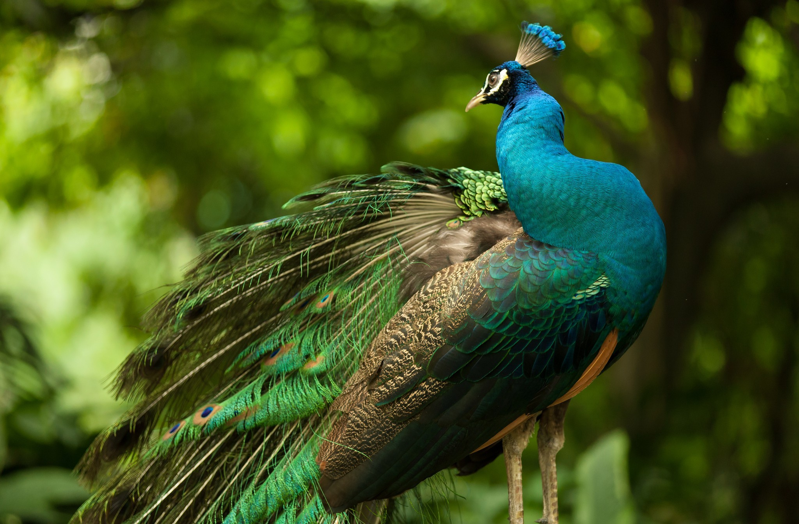
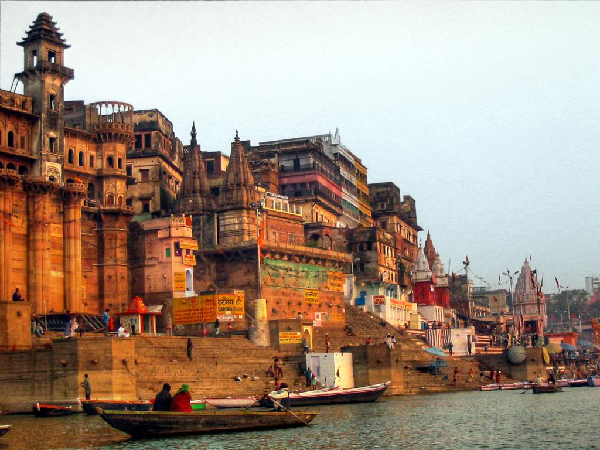

kedarnath
Kedarnath is a town and Nagar Panchayat in Rudraprayag district of Uttarakhand, India, known primarily for the Kedarnath Temple. It is approximately 86 kilometres from Rudraprayag, the district headquarter. Kedarnath is the most remote of the four Chota Char Dham pilgrimage sites.

Peacock
The Indian peacock (Pavo cristatus) has iridescent blue and green plumage, mostly metal-like blue and green. In both species, females are a little smaller than males in terms of weight and wingspan, but males are significantly longer due to the "tail", also known as a "train".

Banaras
Varanasi also Benares, Banaras Banārasa [bəˈnaːrəs] or Kashi (Kāśī [ˈka:ʃi]) is a city on the Ganges river in northern India that has a central place in the traditions of pilgrimage, death, and mourning in the Hindu world